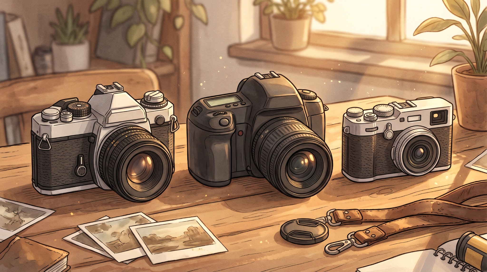
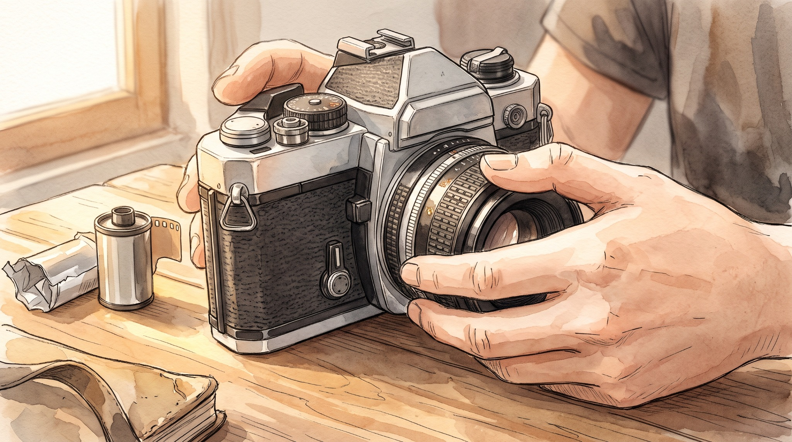
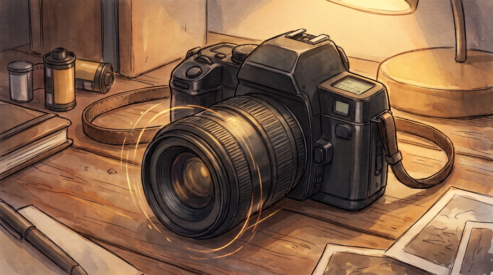
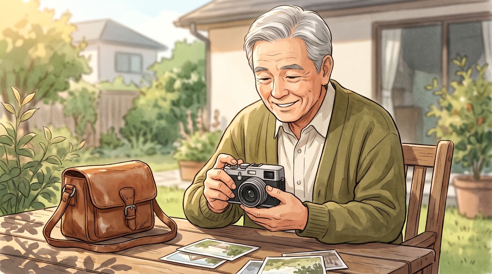

便利になったカメラが、なぜ不便さを売るのか
――ミノルタXD、α-7000、そして富士フイルム X halfが映し出す半世紀の物語――

長いあいだ写真とカメラを愛好してきた私のもとに、少し不思議な魅力を放つ一台のデジタルカメラの話題が届きました。富士フイルムが世に送り出した「X half（製品名：FUJIFILM X-HF1）」というコンパクトデジタルカメラです。
最初にその特徴を聞いたとき、思わず「なぜ今、このようなカメラを作ったのだろう」と強い興味が湧きました。デジタルカメラでありながら、撮影を始める前にあらかじめ「何枚撮るか」を決めてしまうのです。さらに、シャッターを切っても撮ったばかりの写真をすぐには液晶モニターで確かめられず、昔ながらのフィルムカメラのような感覚で撮影を進めていくモードまで用意されています。
私たちが何十年もかけて「もっと便利に、もっと失敗なく、もっと気軽に撮れるように」と願い続けてきたカメラの機能を、今度はあえて手放し、わざわざ不便にして楽しむ。いつの間にか、そんな時代になったのだとしみじみ感じ入りました。
振り返ってみれば、私自身がかつて愛用し、ファインダーを覗き続けてきたカメラに、1977年登場の「ミノルタ XD」と、1985年登場の「ミノルタ α-7000」があります。露出の自動化を切り開いたXD、本格的なオートフォーカス一眼レフの扉を開いたα-7000、そして2025年に誕生したX half。この三台のカメラがそれぞれの時代に背負った歴史的な役割と機能、そして当時の価格をたどってみると、約半世紀にわたる「技術の進歩」と「人が撮る喜び」の関係が、くっきりと浮かび上がってきます。
露出を機械と分かち合った時代――1977年「ミノルタ XD」の役割と機能

まず振り返りたいのが、私が長く愛用していた一眼レフカメラの一つ、1977年に発売された「ミノルタ XD」です。
当時の発売価格は、ボディ単体でシルバーが78,000円、引き締まった佇まいのネオブラックが84,000円でした。1977年当時の物価水準を思い起こせば、ボディだけで月給の大部分に相当する金額であり、レンズを揃えれば相当な買い物になります。まさに、写真と真剣に向き合いたい人が憧れを抱き、大切に使い込むための精密機器でした。
このミノルタ XDがカメラ史において果たした歴史的な役割は、世界初となる「両優先AE（マルチモードAE）」を実現したことにあります。
その前年である1976年、キヤノンから「連写一眼」として知られるAE-1が登場し、一眼レフの世界にはエレクトロニクス化と自動露出（AE）の大きな波が押し寄せていました。当時のカメラ業界では、「撮影者が絞りを決め、カメラがシャッター速度を合わせる絞り優先AE」と、「撮影者がシャッター速度を決め、カメラが絞りを合わせるシャッター速度優先AE」のどちらが写真撮影にとって優れているのかという議論が盛んに交わされており、メーカーごとにどちらか一方の方式を採用するのが一般的だったのです。
そこにミノルタが提示した答えは、実に明快でした。「どちらか一方に絞るのではなく、両方の自動露出を一台のカメラに搭載してしまえばよい」という発想です。人物の背景を柔らかくぼかしたいときには絞り優先を選び、走る子どもや電車など動きのある被写体を止めたいときにはシャッター速度優先を選ぶ。もちろん、すべてを自分の判断で決めるマニュアル露出も使えます。撮影者の意図に合わせて露出制御の主導権を自在に切り替えられるようにしたXDは、マルチモードAE時代の幕開けを告げる記念碑的な一台となりました。
さらに、XDの魅力は機能の新しさだけにとどまりません。端正なデザインと手にしっくりと馴染む操作感、そして機械としての高い完成度は世界中で高く評価され、ドイツの名門であるライカの「R4」から「R7」までのベースモデルにも採用されたことで知られています。
1982年に生産を終えるまで多くの写真愛好家に愛されたXDを使っていた頃、露出の計算という難しい部分は電子回路が賢く支えてくれました。それでも、ピントリングを回して焦点を合わせるのも、親指でレバーを引いてフィルムを巻き上げるのも、すべて自分の指先の仕事でした。電子の知恵を借りながらも、「自分でカメラを操っている」という確かな手応えが手のひらに残っていた時代。ミノルタ XDは、人の感性と機械の正確さが穏やかに調和していた時代の象徴と言えるでしょう。
あのモーター音に時代の進歩を聴いた――1985年「ミノルタ α-7000」の衝撃

それから8年後の1985年2月、一眼レフカメラの歴史を「以前」と「以後」に二分するほどの衝撃的な一台が発売されます。同じく私が愛用した「ミノルタ α-7000」です。
発売当時の価格は、ボディ単体で88,000円。標準的なズームレンズとして広くセットで販売された「AF ZOOM 35-70mm F4」の発売価格は35,000円でした。当時の最先端技術を惜しみなく投入しながら、それまでのマニュアルフォーカス一眼レフと大きく変わらない価格帯に抑えたことも、一般のユーザーまで巻き込む大ヒットの大きな原動力となりました。
α-7000が果たした歴史的な役割は、世界初の実用的な本格システム・オートフォーカス（AF）35mm一眼レフカメラを確立したことです。実はα-7000以前にも、オートフォーカス機能を備えた一眼レフ自体は他社から発売されていました。しかし、それらは専用のレンズ側に大きなモーターと電源を内蔵する構造だったため、レンズが重く大きくなり、使える種類もごく限られ、ピント合わせの速度や精度も実用レベルには達していなかったのです。
ミノルタはこの課題を根底から解決するため、ボディの内部にレンズ駆動用のモーターとCPUを内蔵する「ボディ集中制御」という思想を打ち出しました。そして、長年守り続けてきた従来のレンズマウント（SRマウント）との互換性を断ち切り、ボディとレンズが電子信号で情報をやり取りできる新設計の「Aマウント」へと完全に刷新したのです。既存ユーザーが持つレンズが使えなくなるマウント変更は、当時の大手一眼レフメーカーにとって前代未聞の決断でした。しかし、この覚悟ある刷新によって、従来のマニュアルレンズと変わらない大きさのまま、広角から望遠、マクロまで充実したAFレンズ群を最初からシステムとして揃えることができたのです。
機能面を見ても、α-7000は当時のカメラで自動化できる要素をほぼすべて搭載した一台でした。TTL位相差検出方式による実用的なオートフォーカスに加え、フィルムの先端を置いて裏蓋を閉じるだけの自動装填（オートローディング）、電動による自動巻き上げと自動巻き戻し、さらにDXコードによるフィルム感度の自動設定まで実現しました。シャッターは30秒から1/2000秒までの縦走りメタルフォーカルプレーン式を採用し、ボディ重量は555グラムにまとめられています。
操作系においても歴史的な転換をもたらしました。従来のカメラに必ず付いていたシャッター速度ダイヤルやレンズの絞りリングをなくし、ボディ上面とファインダー内のデジタル液晶を見ながらアップダウンボタンで数値を操作する仕組みを取り入れたのです。どの設定にしていてもボタン一つで全自動に戻せる「プログラムリセット」や、露出を変えずに絞りとシャッター速度の組み合わせを動かせる「プログラムシフト」も備わっていました。この操作体系は、現代のデジタル一眼レフやミラーレスカメラ（αブランドとともにソニーへ継承された系譜を含む）の標準へとそのまま受け継がれています。
α-7000が巻き起こしたブームは「αショック」と呼ばれ、カメラグランプリ'85やヨーロピアン・カメラ・オブ・ザ・イヤー'85を受賞したほか、1985年の日経ヒット商品番付で東の横綱に選ばれました。翌1986年にはミノルタの一眼レフ国内シェアが40％に達するという、空前絶後の記録を打ち立てたのです。
私自身の記憶の中で、α-7000について何より忘れられないのは、やはりあの「モーター音」です。シャッターボタンを半押しすると、ボディ内のモーターが唸りを上げ、レンズが自動で動いてピントを合わせてくれます。
正直なところ、当時のオートフォーカスよりも、自分の手でピントリングを回して合わせる方が速い場面は少なくありませんでした。広角レンズであればすぐにピントが合いますし、望遠レンズを使う場面でも、慣れた自分の手で合わせた方が速いと感じたものです。
それでも、レンズが自動で動くこと自体が、機械好きの私にはたまらない感動でした。単に便利かどうかという損得を超え、あの少し無骨なモーター音に、機械が進化していく時代の息吹を肌で感じていたのです。
フィルム写真は、本当に粗かったのか
α-7000の誕生からちょうど40年が経った2025年、富士フイルムから「X half（FUJIFILM X-HF1）」が登場しました。このカメラは、アナログ時代のフィルム写真の色合いや独特の雰囲気を、デジタルで多彩に楽しめるように作られています。
近年、若い世代を中心にフィルム写真への関心が高まり、少し色あせた色調や、粒子の粗い描写が「フィルム写真らしい味わい」として親しまれる場面をよく目にします。懐かしさや温かみを感じる気持ちはよく分かります。
けれど、長いあいだフィルム写真に親しんできた私には、そこに少しだけ小さな違和感があります。実際のフィルム写真は、決して粗くも色あせてもおらず、驚くほど美しかったからです。
光学メーカーはより細かな描写と抜けのよい解像度を目指してレンズを設計し、フィルムメーカーは自然で豊かな発色と滑らかな階調を得るために、長い年月をかけて乳剤や現像の技術を磨き上げてきました。丁寧に露出を決め、正しく現像・プリントされたフィルム写真は、現代のデジタル写真と比べても見劣りしないほど澄み渡った美しさを持っていたのです。
私たちが古いアルバムを開いたときに目にする色あせは、長い歳月による経年変化の結果であって、フィルム本来の画質とは別のものです。フィルム時代を直接知らない世代の方々にも、「かつてのフィルム写真には、技術者たちの誇りが詰まった本来の美しさがあった」ということを、ぜひ知っていただきたいと感じています。
そして、フィルム時代にもう一つ大切だったものがあります。それは「シャッターを押す前に考える時間」です。
フィルムカメラでは、1本のフィルムで撮れる枚数が24枚や36枚と決まっていました。シャッターを一度押せば、確実に大切な一コマを使います。だからこそ、撮る前に光の具合を観察し、背景の整理を考え、構図を練り、被写体の表情が最も輝く瞬間を待ってからピントを合わせました。それでも、本当に狙い通りに写っているのかどうかは、現像が終わってプリントを受け取るまで分かりません。
今では、何枚でも気にせずシャッターを切り、その場で背面液晶を見て確かめ、失敗すればすぐに消して撮り直すことができます。私たちが長い間追い求めてきた「失敗しない便利なカメラ」が、いま目の前に完成しているのです。
あえて「不便さ」を設計する――2025年「富士フイルム X half」という問い

そのようなデジタルの完成期に、2025年6月26日に発売されたのが「富士フイルム X half（製品名：FUJIFILM X-HF1）」です。
希望小売価格はオープン価格で、発売発表時の市場想定価格は税別108,000円（税込実勢価格は発売当初で10万円台後半）でした。発売から1年以上が経過した現在（2026年秋）では、家電量販店で税込9万円前後、ネットショップの最安値では7万円台と、趣味のカメラとしてより手が届きやすい価格帯になっています。1977年のXD（78,000円〜84,000円）や、1985年のα-7000（ボディ88,000円）と並べてみても、それぞれの時代に写真好きが「よし、これを相棒にしよう」と心を決めて手に入れる、絶妙な位置づけの価格であることが分かります。
X halfの企画の出発点は、かつて35mmフィルムの1コマを半分に割って2倍の枚数を撮影できた「ハーフサイズカメラ」にあります。外形寸法は幅105.8mm×高さ64.3mm×奥行45.8mm、バッテリーとメモリーカードを含めた重さは約240グラムと、ポケットにすっと収まる軽快なコンパクトボディを実現しました。カラーはブラック、シルバー、チャコールシルバーの3色展開です。
内部には1インチサイズのセンサー（有効約1,774万画素）を縦位置で配置し、レンズは35mm判換算で約32mm相当（F2.8〜F11）の単焦点レンズを搭載しています。縦構図（3対4）を基本としており、スマートフォンの画面やSNSとの親和性にも配慮されています。
このカメラが現代において担った歴史的な役割は、画素数や連写速度といったスペック競争から一歩離れ、「写真を撮る体験とプロセスそのもの」をデジタル技術で再構築したことにあります。
それを象徴するのが「フィルムカメラモード」です。このモードを起動すると、撮影者は最初に「36枚・54枚・72枚」の中から撮影枚数を選び、PROVIAやVelviaなどのフィルムシミュレーションやフィルターを決定します。いったん撮影が始まると、背面液晶モニターは使わずに光学ファインダーだけで被写体を覗き、1枚撮るごとに本体右肩の「フレーム切り替えレバー」をフィルム巻き上げのように操作して次のコマへ進みます。そして、最初に選んだ枚数をすべて撮り終えるまで、自分が撮った写真をその場で確認することができないのです。
さらに、フレーム切り替えレバーを使って連続した2枚の縦写真を1枚の画像に並べる「2in1」機能も備わっています。隣り合った2枚の組み合わせから思わぬ物語が生まれる面白さは、まさにハーフサイズカメラならではの醍醐味です。
デジタルカメラの最大の強みである「無制限に撮れて、すぐに確認できる」という便利さを、あえて最新の技術で縛ってみせる。富士フイルムは、写真という完成品のデータだけでなく、「一コマずつ丁寧に考え、レバーを引き、現像を待つように結果を楽しみにする」という行為そのものに、現代人が忘れかけていた豊かな価値を見いだしたのではないでしょうか。
三台のカメラを並べて見える「便利さの先にあるもの」
ここで、半世紀のあいだにそれぞれの時代を象徴した三台のカメラの役割・機能・価格を、一覧表に整理してみましょう。
| 機種名 | 発売年 | 発売当時の価格 | 主な機能と特徴 | 歴史的な役割 |
|---|---|---|---|---|
| ミノルタ XD | 1977年 | 78,000円（シルバー）／84,000円（ネオブラック）※ボディ | 世界初の絞り優先・シャッター速度優先の両優先AEとマニュアル露出を搭載。手動のピント合わせと巻き上げが残る | マルチモードAE時代の幕開け。ライカR4〜R7のベースとなる高い完成度を実現 |
| ミノルタ α-7000 | 1985年 | 88,000円（ボディ）／35-70mm F4レンズは35,000円 | ボディ内モーターによる実用AF、Aマウント刷新、フィルム装填・巻上・巻戻の全自動化、液晶とボタンによる集中制御 | 「αショック」を巻き起こし、本格AF一眼レフと現代カメラの操作系の標準を確立 |
| 富士フイルム X half（X-HF1） | 2025年 | オープン（発売時想定：税別108,000円／2026年実売：7〜9万円台） | 1インチ約1,774万画素、約240g、32mm相当F2.8。光学ファインダーとレバー操作、枚数制限のフィルムカメラモード、2in1機能 | デジタル飽和時代に、あえて制約を設けることで「撮る行為そのもの」の楽しさを再発見 |
こうして三台を並べてみると、カメラの進化の軌跡が実によく見えてきます。
1977年のミノルタ XDは「露出の計算」を自動化し、1985年のミノルタ α-7000は「ピント合わせとフィルム送り」を自動化しました。そして現代のカメラは、AIによって人の瞳や動物、乗り物まで自動で認識して追いかけ続けるところまで到達しています。
かつてα-7000のモーター音に胸を躍らせていた私が、40年の時を経て、今度はフィルムカメラの不便さを再現したデジタルカメラに興味を惹かれているのですから、考えてみればおかしな話です。けれど、そこには確かな理由があるように思えます。
技術が十分に成熟し、機械が何でも完璧にこなしてくれる安心感が手に入ったからこそ、私たちは初めて「どこまでを機械に任せ、どこからを自分の手と心で楽しむのか」を自由に選べるようになったのではないでしょうか。
X halfは、単に懐かしい昔へ戻ろうとしているカメラではありません。現代の最新技術を惜しみなく使うことで、人間がかつて味わっていた「撮る前に考える時間」や「待つ喜び」を、今の時代にもう一度味わおうとしているのです。
このことは、カメラの世界だけでなく、私たちが向き合う学びや日々の暮らしにも深く通じているように感じます。調べたい答えや整った結果が瞬時に手に入る便利な時代だからこそ、あえて立ち止まり、自分の目で確かめ、迷いながら一手間をかける時間にこそ、かけがえのない手応えと豊かさが宿るのかもしれません。
三台の名機が歩んだ半世紀に思いを馳せていたら、懐かしい記憶が静かに胸いっぱいに広がりました。便利さの先にある豊かな時間を感じながら、あのミノルタ α-7000がピントを合わせるために響かせていた、少し無骨で力強いモーター音を、今になってもう一度じっくりと聞いてみたくなりました。